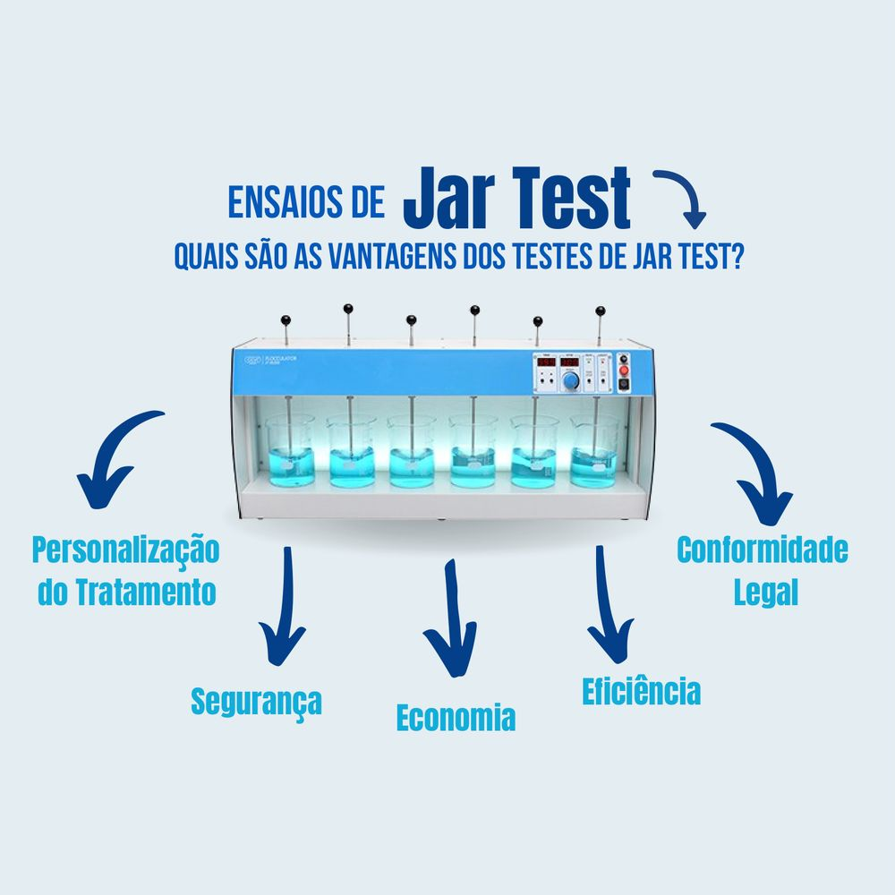
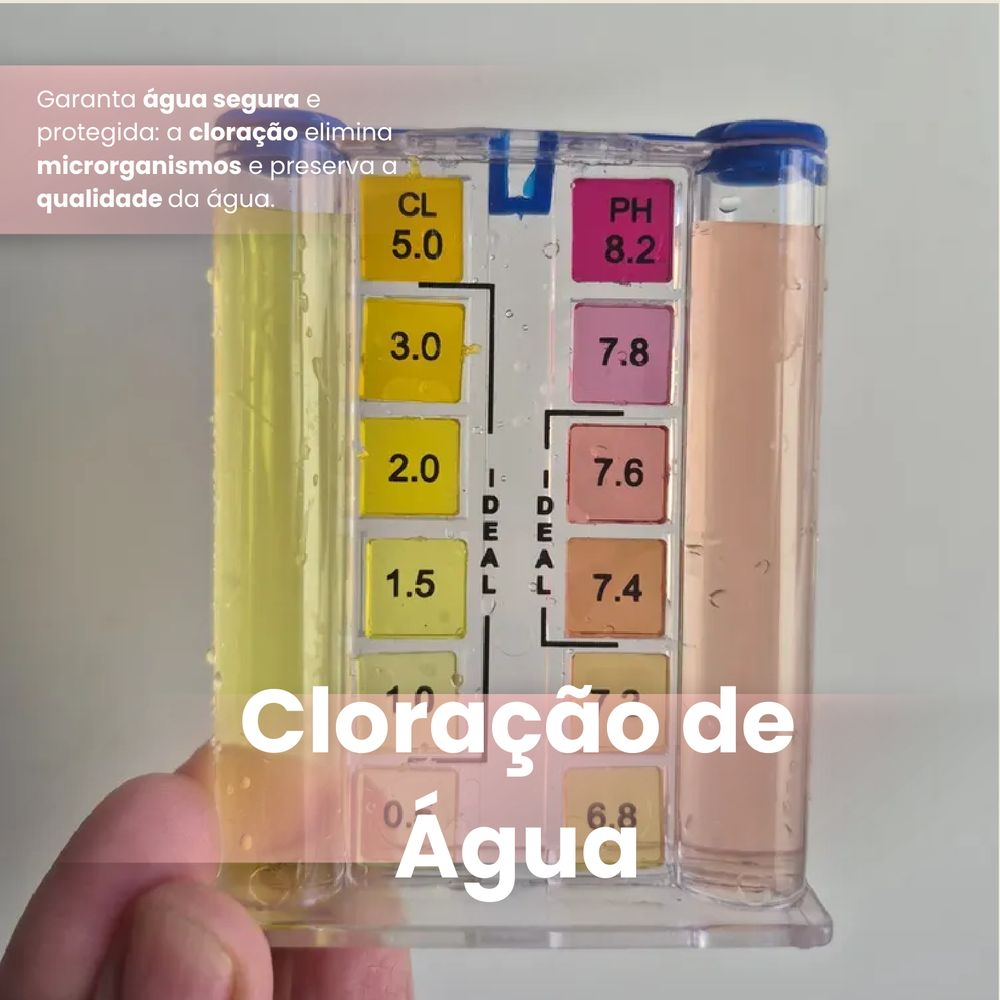
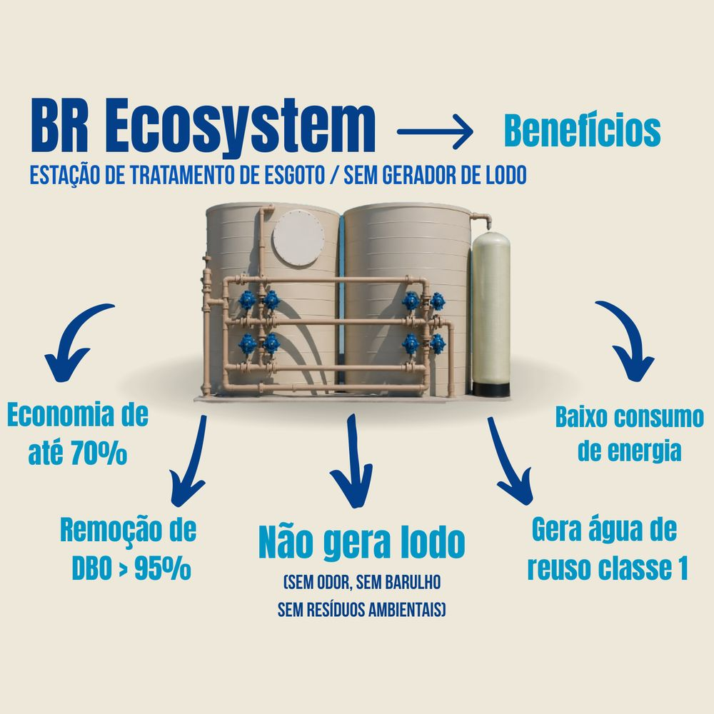

Cada tratamento eficiente começa por medir. Diagnosticamos a qualidade da água e monitoramos os parâmetros que garantem segurança e desempenho.
Antes de recomendar qualquer sistema, a PH Águas analisa a água na origem. É esse diagnóstico que define a tecnologia, a dosagem e a rotina de manutenção mais adequadas para cada operação.
Nossa equipe técnica acompanha os parâmetros críticos da água — físico-químicos e microbiológicos — assegurando conformidade legal, economia de insumos e resultado real em campo.
Da bancada ao campo: os métodos que sustentam a eficiência dos nossos tratamentos.



Solicite uma análise técnica e receba a recomendação de tratamento mais eficiente para a sua operação.